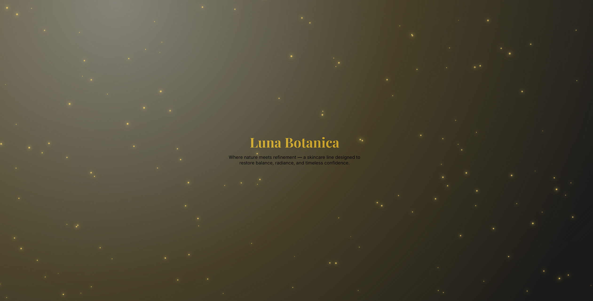
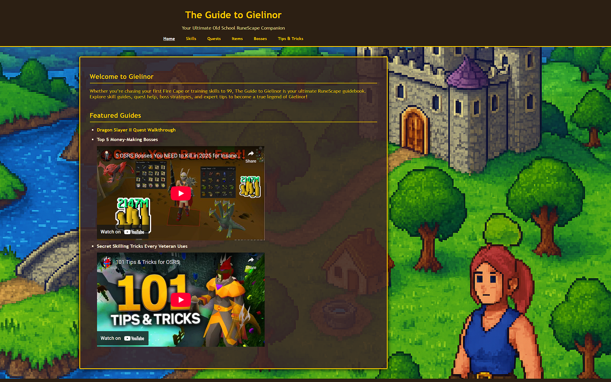

Frontend foundation
Building static sites with cleaner structure, stronger visual hierarchy, and responsive layouts that hold up on mobile screens.
Software Development Student | Boise, Idaho
I am Richard Spink, a software development student at the College of Western Idaho. I am currently focused on entry-level opportunities in web development, Python, SQL, and C# where I can keep learning while contributing reliable work.
Current focus
My portfolio is strongest when it shows range, so I am building experience across user interface work, programming fundamentals, and database-backed problem solving.
Building static sites with cleaner structure, stronger visual hierarchy, and responsive layouts that hold up on mobile screens.
Practicing database design, application logic, and data handling through coursework repositories and local SQLite experiments.
Strengthening object-oriented programming skills through C# assignments and ongoing experimentation with Unity game systems.
Featured work
I am early in my software career, so this portfolio highlights real coursework, self-directed practice, and visual web projects that show how I am improving.

Featured web project
A polished design concept site that explores premium branding, landing page structure, and stronger visual direction than a typical school project.

Content + media project
A themed guide site that combines custom visuals, structured content, and embedded video resources inside a single browsing experience.
Programming fundamentals
Repositories that document my progress in Python, SQL, and C# as I build stronger fundamentals and more consistent project structure.